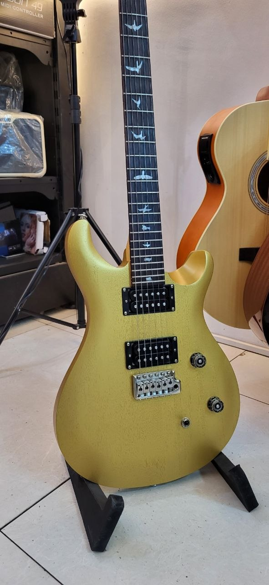
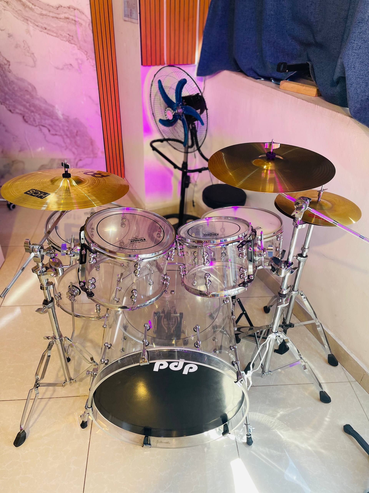
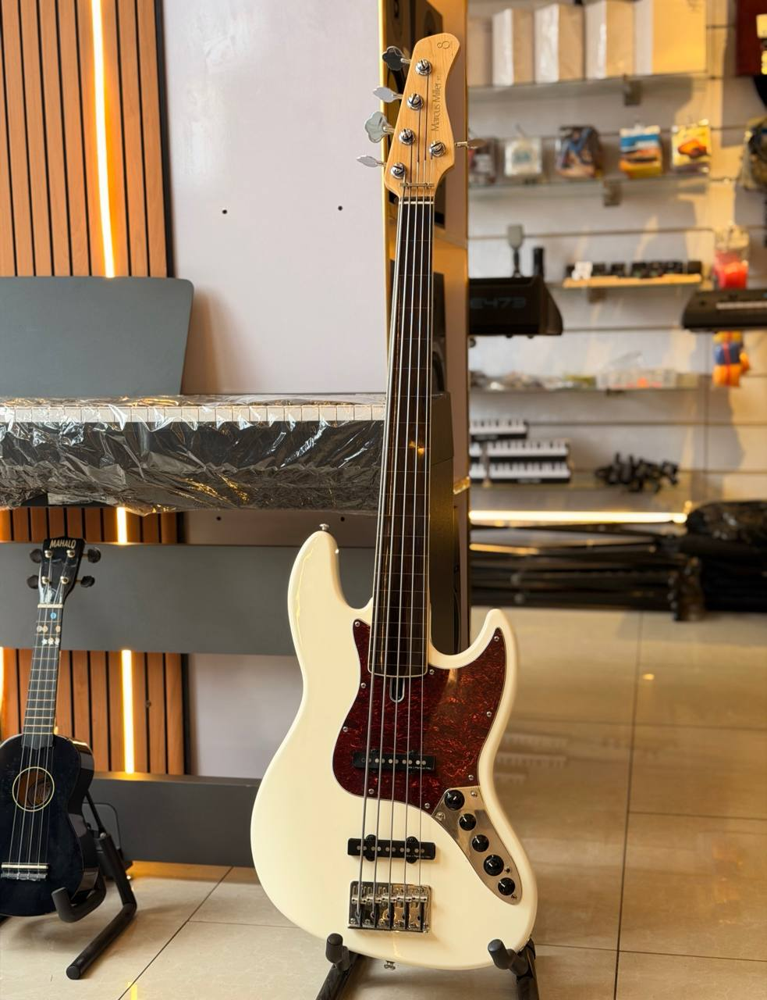
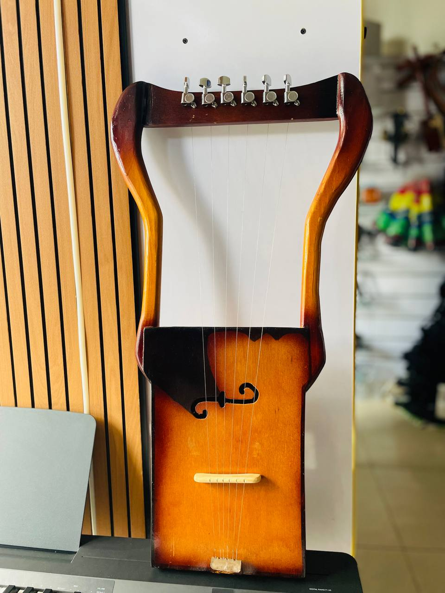
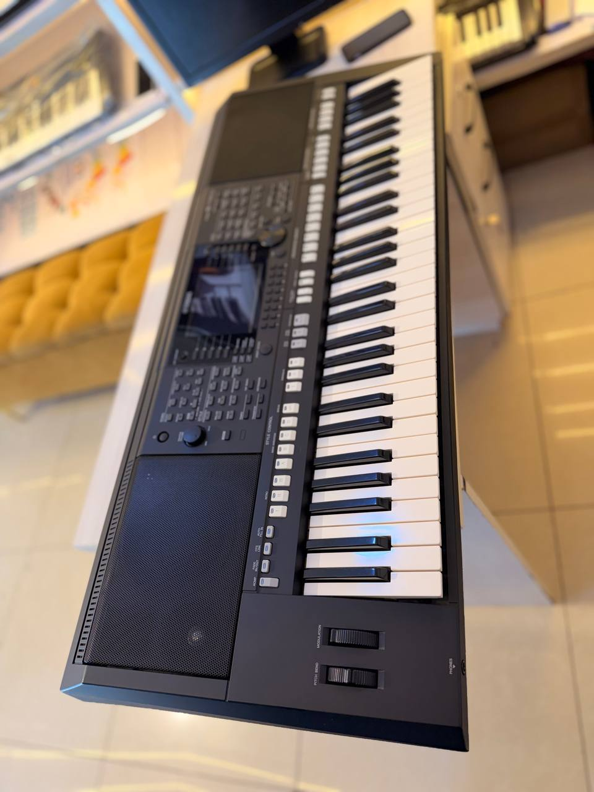
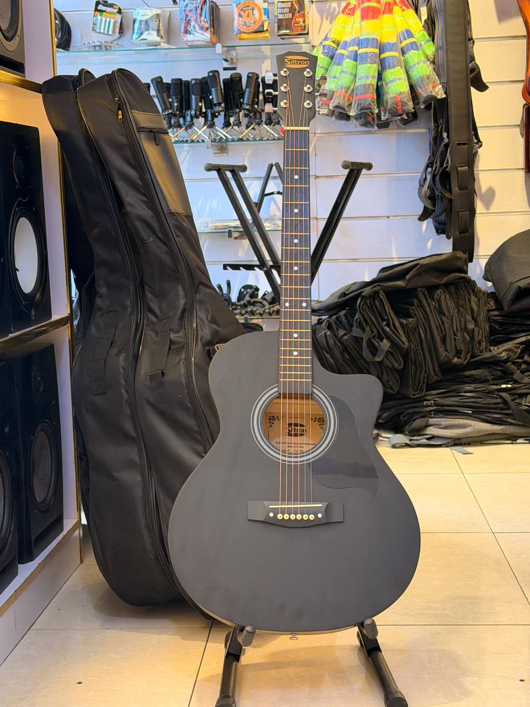
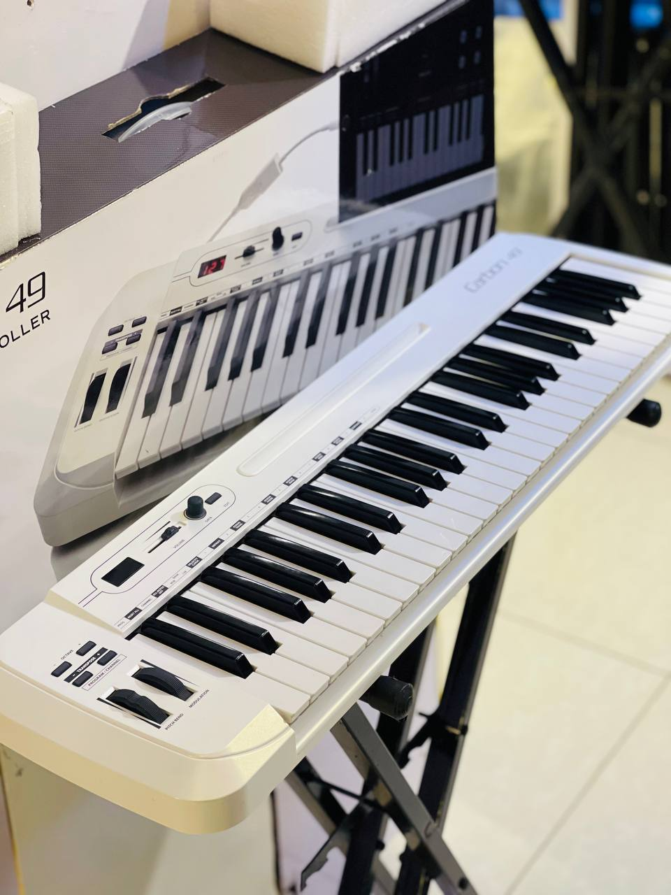

Our Products
We offer a variety of musical instruments for music lovers around the world.
| Instrument | Model | Description | Picture |
|---|---|---|---|
| Lead Guitar | PRS SE custom25 | An electric guitar used for melodies and solos. |  |
| Alto Sax | Alto Saxophone | A wind instrument used in many styles of music. |  |
| Drum Set | YAMAHA PDP | A transparent drum set used to create musical rhythms. |  |
| Bass Guitar | Marcus Miller | A bass guitar that produces low musical sounds. |  |
| Kirar | Traditional Ethiopian Kirar | A traditional Ethiopian string instrument. |  |
| Keyboard | Yamaha PSR-790 | An electronic keyboard used to play different musical sounds. |  |
| Acoustic Guitar | Siltron | An acoustic guitar that produces sound without electronic amplification. |  |
| MIDI Keyboard | Casio | A keyboard used to control digital musical instruments. |  |